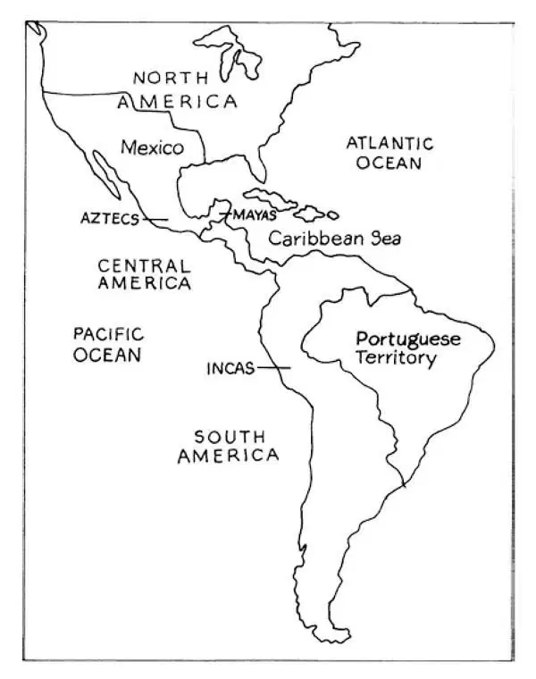
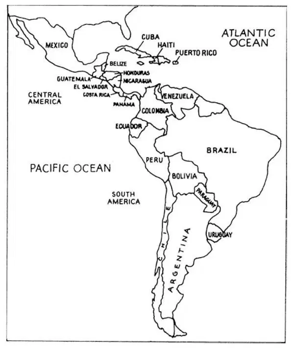

78
Latin America and the Caribbean Islands
拉丁美洲和加勒比海群岛

WHEN you think about places like Mexico and South America and the Caribbean islands, you may think about wonderful beaches or the celebration of Carnival that is like Mardi Gras in New Orleans. But did you know that the first university in North America opened in Mexico before Jamestown was even thought of? Or do you know the name of Simon Bolívar, a hero in South America, who is known there as well as George Washington is known in the United States?
Mexico, which is part of North America, along with Central and South America and the island nations of the Caribbean all have long histories just as we do. Most people from the United States don't know those stories and usually don't know very much at all about the other countries in this hemisphere. So I'm going to tell you a little about these neighbors of ours, especially about several of their heroes. When you know these stories, you will know more about our neighbors to the south than most adults do! Try it out on your family. See if I'm right.
You remember that the Spanish conquered most of the islands of the Caribbean and then Central and South America and Mexico in the years after Columbus first crossed the Atlantic. The Spanish took over lands where many different groups of Native Americans like the Mayas, the Incas, and the Aztecs had been living. They found lots of gold and silver. They made the native people work in the gold and silver mines so that the precious metals could be shipped to Spain to make that nation richer. When other European countries saw the fabulous wealth, they wanted some too. Soon the Spanish had to share the “New World” with other people. Portugal occupied the land that we call Brazil today. England and France claimed the eastern part of North America. England, France, Holland, and even Denmark snatched up some of the islands and a little land along the coast of Central and South America, but Spain continued to control most of the land that we call Latin America today. The Spanish language spoken by the colonists is still the most common language in Latin America, which includes all the lands in the Americas south of the United States. And the Roman Catholic religion, followed by most of the Spanish settlers, is still the largest religion there.
Most of the early Spanish settlers were men. Many of them married Native American women. Soon there were a lot of people whose parents and grandparents were both European and Native American. These people are called Mestizos . People whose ancestors were only Europeans were called Creoles . In some places land owners brought slaves from Africa to do their work for them. Some people with African ancestors married Creoles or Mestizos. Soon people in Latin America came not only in all sizes and shapes but in all colors as well. The king and queen in Spain sent out officials to rule over all these people. The officials collected taxes, but they didn't let any of the people have much say in how they would be ruled.
You can imagine that there were a lot of unhappy people in the colonies in Latin America and the Caribbean! The Creoles thought that they should run the government and keep all the gold and silver and other wealth found in America. The Native Americans and the Mestizos both believed that they should have as much power as the Creoles or the officials sent from Europe. And, of course, the slaves didn't like being slaves, and they wanted very much to be free. This was true not only in the Spanish colonies but everywhere throughout Central and South America and the Caribbean.
Can you guess what happened next?

Colonial Latin America showing Native American civilizations
（殖民地时期拉丁美洲地图，图中显示出美洲印第安人的文明古国）
If you guessed revolution, you are right. In fact, a lot of revolutions broke out all over the place. These came not too long after the American Revolution and the French Revolution that you already know about. Each revolution had its own battles and its own heroes. Here are just a few of the stories.
The first big revolution took place in Haiti. Haiti is an island nation in the Caribbean and was a French colony. When the revolution began in France in 1789, people in Haiti heard all about it. They heard the famous slogan, Liberté, égalité, fraternité . Do you remember what that means? Well, the people in Haiti wanted their share of that liberty, equality, and brotherhood that everyone was talking about. But the Haitians didn't exactly agree on what that meant! The wealthy Creoles who owned most of the land thought it meant that they should be equal to French people in France. Ordinary people in Haiti, some of whom had a mixed racial background (whose ancestors were part French and part African) thought it meant that they should be equal to the wealthy Creoles. Slaves believed that it meant slavery should be abolished and all the former slaves should be full citizens with the same rights as all citizens. Before long, everybody was fighting everybody else.
One part of this fighting was a slave rebellion that began on the northern part of the island. As so often happens, a strong leader took charge and led his people to victory. This man was Toussaint L'Ouverture. Toussaint, as he is called, had been born a s lave. He is said to have been the grandson of an African king. He could read and write, and he knew all about the revolution in France and the ideals of liberty and equality. He also knew how dreadful it was to be a slave. So he and his followers fought hard until the French government abolished slavery in Haiti, and then he continued to fight until he was put in charge of the government. He ruled well for several years. He asked black people and white people to work together to rebuild the country that had been torn apart by war, and Haiti began to recover. Then Napoleon came to power in France, and Napoleon didn't like this strong ruler named Toussaint. You might say that Napoleon was jealous of Toussaint. Or maybe Napoleon just decided that he wanted to control the island. In any case, Napoleon sent soldiers to Haiti. The general in charge of the French army played a mean trick on Toussaint. He invited Toussaint to be his guest for dinner. Then, when Toussaint came, the French general took him prisoner. Toussaint was sent to a prison all the way across the Atlantic in France. He died there a year later. But all was not lost. Soon a new leader named Jean-Jacques Dessalines took over the fight, and Haiti became an independent country. This is not a story with a completely happy ending though. After independence, a civil war broke out and Haiti had no real peace for many years.
In Spain's American colonies, there were a lot of unhappy people, too. Like the Haitians, they knew about the revolutions in the United States and in France. And they also had a lot of complaints about the conditions of their own lives. The Creoles were angry because people sent by the king from Spain had all the power, and they had none. All the people living in the Spanish colonies resented paying high taxes to the king of Spain. The Mestizos were angry with Spain just as the Creoles were. Native Americans knew that the Spanish had taken away their land, made them perform forced labor like slaves and killed many of their people. Most of all, these native peoples wanted their land back. Slaves in Latin America, like slaves everywhere, wanted to be free.
The first revolt against Spanish rule took place in South America, in what is now the nation of Peru. It was led by a man named Tupac Amaru, a Mestizo who was descended from Inca kings. The Spanish troops came and killed him and his followers, and that was the end of that. Latin America would have to wait a while for things to change.
A little after 1800, things really began to happen. First, in Europe, Napoleon conquered Spain, threw out the king, and made his own brother the new king of Spain. What do you think of that? Well, the people in Latin America saw it as a good excuse to declare independence. After all, their old king was no longer on the throne and clearly, they figured, Napoleon had no right to rule them. So the fighting began.
First, in Argentina, an army organized and won independence. The leading general, José de San Martín then decided on a dangerous plan. He led his armies across the high Andes mountains into Chile and later on to Peru to fight for independence in those places, too. Look at the map and see where those countries are. About one third of San Martín's soldiers were slaves to whom he had promised freedom for joining his army.
The best known hero in all Latin American history is Simon Bolívar. Just as I told you at the beginning, he is as famous in South America as George Washington is in the United States. Simon Bolívar was born in Caracas, Venezuela. He was the youngest of four children. His parents were wealthy Creoles who owned several houses, silver and copper mines, large herds of cattle, and large farms where sugar and cocoa were grown. You probably think that Simon must have been a very lucky little boy but, in fact, he was not. Simon's father died before he was three, and his mother died two weeks before his ninth birthday. The children all went to live in different places. Simon went to live with an uncle. This man was cold to Simon, and Simon missed the rest of his family very much.
When Simon was eleven, his uncle hired a young man to come tutor him. In those days, wealthy boys did not go to school. They had private tutors who came to their homes. Simon's new tutor was also named Simon—Simon Rodriguez. This young teacher taught Simon Bolívar all the new ideas that educated people were talking about. He taught him about the revolutions in the United States and France. He told him to look around him at the sad lives of the Native Americans and the slaves in Venezuela and to see how the Spanish wouldn't let people in their colonies rule themselves. With all this, it's not surprising that Simon Bolívar grew up to be a revolutionary.
In 1811, Creoles in Venezuela declared their independence from Spain. Just as we had to fight the British after we declared independence, the people of South America had to fight the Spanish to make their independence real. Simon Bolívar became one of the highest ranking officers in the rebel army. The next year, there was a terrible earthquake in Caracas that killed ten thousand of the rebel soldiers. A lot of people would have given up, but Simon Bolívar did not. He formed a new army and fought on. Finally he liberated Venezuela and then Colombia, Bolivia, and Ecuador. Bolívar was chosen president of the newly independent lands. He called this new country Gran Colombia in honor of Christopher Columbus.
Bolívar hoped to unite all the states of Latin America. But his plans never worked out. The places that broke away from Spanish rule split into the many separate countries of modem Central and South America. One country is named for the famous leader Bolívar. Can you pick it out on the map?

Countries of Latin America and the Caribbean （拉丁美洲和加勒比海国家）
In most of the new countries, the wealthy people would not share the power with ordinary people, and they also refused to return any land to the Native Americans. Nor would they end slavery as Simon Bolívar wanted them to do. So all of Latin America's problems were not solved after independence. Still, Simon Bolívar is a hero in all the countries of South and Central America. He is known throughout the region as El Libertador —the Liberator.
Our nearest southern neighbor is Mexico. Take a minute and find Mexico on the map. Mexico used to be called New Spain, and it included such places as Texas, Arizona, New Mexico, and California. Mexicans rebelled against Spain just as the people in South America did. The first uprising was led by a Creole priest named Father Miguel Hidalgo. He led a small group of Native Americans and others who joined him. They wanted to take some of the land from the few very wealthy people who owned it all and give some of it back to the native people from whom it had been taken, and to other poor people as well. The Spanish and the wealthy Creoles all went after him and, of course, they defeated his rebels. After Hidalgo was captured and executed, a Mestizo priest named Father José Maria Morelos led the fight. He, too, was captured and executed. In the end, the Creoles led the fight for independence from Spain, but they kept all the power in the hands of rich people. A general named Agustín de Iturbide actually declared Mexican independence in 1821. Soon after that, he was declared emperor, and the history of modern, independent Mexico had begun.
You can see from all this that there is a lot of history in the Americas south of the United States. All these new names may seem hard at first but, if you just think of them as people like George Washington, Benjamin Franklin, and Thomas Jefferson, you will understand what important people they are.
Now, you go try out some of those names on an adult you know and see how little most people from the United States know about our southern neighbors.
【中文阅读】
当你想到像墨西哥、南美洲和加勒比海群岛这些地方时，你也许会联想到美丽的海滩，或者类似新奥尔良“肥美星期二”那样的狂欢节活动。但是你知道吗，早在人们考虑在詹姆斯敦建立北美洲第一个殖民点之前，墨西哥就创办了北美洲第一所大学。你听说过西蒙•玻利瓦尔这个名字吗？他是南美洲的一个大英雄，在南美洲家喻户晓，就像乔治•华盛顿在美国一样知名。
墨西哥属于北美洲，它和中美洲、南美洲以及加勒比海诸岛国，就像我们美国一样，都有着悠久的历史。大部分美国人不知道它们的历史，他们对与我们同一半球的其他国家的知识少得可怜。所以我要讲讲美国这些邻居的事情，尤其是要讲讲其中几位英雄的故事。当你知道了这些故事，你对美国南边的邻居的了解就会比多数成年人知道的还多呢！到时候，你考考家人，看我说的对不对。
还记得吧，在哥伦布首次横渡大西洋后的那些年中，西班牙征服了加勒比海的大多数岛屿，然后是中美洲、南美洲和墨西哥。西班牙人占领了美洲印第安人许多不同部落，包括玛雅人、印加人和阿兹特克人一直居住的土地。他们发现了大量黄金和白银。他们让土著人在金矿和银矿里干活，于是这些开采出的贵金属就可以运回西班牙，让那个国家更加富有。其他欧洲国家看到这难以置信的巨额财富，也想分一杯羹。不久，西班牙人就不得不与其他欧洲人分享“新大陆”了。葡萄牙人占领了我们如今称为巴西的土地。英国和法国夺得了北美洲东部地区。英国、法国、荷兰，甚至还有丹麦夺走了中美洲和南美洲沿岸的一些岛屿和一小块土地，但是西班牙继续控制着我们如今称为拉丁美洲的大部分土地。当时殖民者说的西班牙语现在依然是拉丁美洲最通用的语言，拉丁美洲包括美国以南的美洲所有的土地。大部分西班牙移民者信仰的罗马天主教如今依然是那里最大的宗教。
西班牙早期移民者多数是男人。他们中许多人娶了美洲印第安女人。不久那里就有许多人的父母和祖父母分别是欧洲人和美洲印第安人了。这些人被称为“梅斯蒂索人”。祖先都是欧洲人的人则被称为“克里奥耳人”。在有些地方，土地拥有者从非洲运来奴隶为他们干活。一些非洲人后裔和克里奥耳人或梅斯蒂索人结了婚。不久，拉丁美洲不仅有了各种个头和身材的人，而且有了各种肤色的人。西班牙国王和王后派出一些官员统治所有这些人。这些官员征收税款，但是他们不允许任何人对他们的管理有什么发言权。
你可以想象在拉丁美洲和加勒比海的殖民地有许多人不快乐！克里奥耳人认为应由他们管理当地事务，并拥有在美洲发现的所有金银和其他财富。美洲印第安人和梅斯蒂索人都认为他们应该拥有和克里奥耳人或从欧洲派来的官员一样多的权力。而且，当然啦，那些奴隶也不愿当奴隶，他们非常渴望得到自由。不仅仅在西班牙殖民地是这种情况，在中美洲、南美洲和加勒比海的每个地方都是这样。
能猜到接下来要发生什么吗？
如果你猜到是革命，那你就猜对了。事实上，各地都爆发了多次革命。这些革命就在你所知道的美国革命和法国革命后不久爆发的。每次革命都发生了一些战役并涌现出英雄。下面只讲其中几个故事。
最早一次大革命发生在海地。海地是加勒比海的一个岛国，是法国殖民地。 1789年法国大革命爆发后，海地人民听说了这一切。他们听到了那个著名的口号，“自由、平等、博爱”。那么，海地人民也想分享每个人都在谈论的那种自由、平等和博爱。但是海地人民对这个口号意义的理解并不一致！拥有大部分土地的富有的克里奥耳人认为口号意味着他们应该和住在法国的法国人一样平等。海地的普通人，其中有些人是非—法混血后裔认为口号意味着他们和富有的克里奥耳人应当是平等的。奴隶们相信口号意味着奴隶制度应该被废除，所有以前的奴隶应该成为真正的公民，享有和所有公民相同的权利。不久，所有的人都相互打起来了。
这其中爆发了一次奴隶起义，是从岛屿北部开始的。往往时势造英雄，一个强有力的领袖应运而生，掌控了大局，领导人民走向胜利。这个人就是图森—路维杜尔。图森，如今人们这样称呼他，是奴隶出身。据说他是一位非洲国王的孙子。他 会读书写字，了解法国革命的一切以及自由、平等的理想。他也清楚当奴隶是多么悲惨。所以他和他的追随者们进行艰苦卓绝的斗争直到法国政府废除了海地的奴隶制度，之后他继续斗争直到他升任当地政府的主管。他执政的那几年，把国家管理得很好。他要求黑人和白人一起工作，重建因战争而四分五裂的国家，于是海地开始复苏。这时拿破仑在法国上台掌权，拿破仑不喜欢这位叫图森的强大统治者。你可以说拿破仑妒忌图森，又或者是拿破仑只是决定自己来统治这个岛国。不管怎样，拿破仑派兵前往海地。带领法国军队的将军对图森施出了卑劣手段。他特邀图森参加宴会。在图森来了之后，法国将军俘虏了他。图森被押解远渡大西洋，送进法国的一个监狱。一年以后他死在狱中。但是海底的革命斗争并没有彻底失败。不久，一个叫让•雅克德萨利思的新领袖接替图森继续战斗，海地最终成为一个独立的国家。不过故事的结局并不十分美满。独立以后，一场内战爆发了，之后很多年海地都没有真正的和平。
在西班牙的美洲殖民地中，也有许多不快乐的人。像海地人民一样，他们了解美国和法国的革命。他们对自己的生活境况也是满腹牢骚。克里奥耳人感到愤愤不平，因为国王从西班牙派来的人拥有所有的权力，而他们什么权力也没有。所有生活在西班牙殖民地的人都厌恶向西班牙国王缴纳高额的税金。和克里奥耳人一样，梅斯蒂索人对西班牙感到愤怒。美洲印第安人知道西班牙人夺走了他们的土地，让他们像奴隶一样从事强制劳动，还杀害了他们的许多同胞。这些印第安人最想要的就是收回他们的土地。拉丁美洲的奴隶和任何地方的奴隶一样渴望自由。
最早反抗西班牙的起义发生在南美洲，就是现在秘鲁这个国家所在的地方。起义是由一个叫图帕克•阿马鲁的人领导的，他是梅斯蒂索人，印加国王的后裔。西班牙军队开过来，杀掉了他和他的追随者，起义就这样结束了。拉丁美洲要等一段时间，局势才会所变化。
在公元1800年后不久，真的有了新情况。首先，在欧洲拿破仑征服了西班牙，撵走了国王，让自己的兄弟当了西班牙的新国王。你怎么看这件事？拉丁美洲人民把这看作一个他们可以宣布独立的正当借口。毕竟，他们的老国王已经不在位了，显然他们认为拿破仑无权统治他们。于是交战开始了。
最初，有一支军队在阿根廷组织了起来，赢得了独立。领军的将军是圣马丁，他这时决定实行一个危险的计划。他率领军队翻越高高的安第斯山脉进入智利，后来再到秘鲁，为那些地方的独立而战。看一看这幅地图，看这些国家在哪个地方。圣马丁的士兵大约有三分之一是奴隶，他曾向他们承诺，只要加入军队，就给他们自由。
在整个拉丁美洲历史上，最著名的英雄是西蒙•玻利瓦尔。就像我一开始介绍的，他在南美洲就像乔治•华盛顿在美国一样出名。西蒙•玻利瓦尔出生在委内瑞拉的加拉加斯。他是四个孩子中最小的。他的父母是富有的克里奥耳人，有好几所房屋、银矿和铜矿、大批的牛群、种植糖料作物和可可树的大农场。你大概认为西蒙一定是个非常幸运的小男孩，但是实际上，并非如此。西蒙不到3岁的时候，父亲就去世了，而他母亲也在距他9岁生日还有两个星期时去世了。孩子们都到不同的地方生活。西蒙到他的一个叔叔那儿生活。他叔叔对西蒙非常冷淡，西蒙非常想念他的家人。
西蒙11岁时，他叔叔雇了一个年轻人来当他的家庭教师。那时候，有钱人家的男孩子不上学。他们有私人家庭教师。西蒙的新的家庭教师也叫西蒙——西蒙•罗德里格斯。这个年轻的老师把那些受过教育的人正在谈论的新思想都教给了西蒙•玻利瓦尔。他还给他讲美国革命和法国大革命。他叫他去看看他周围那些委内瑞拉的美洲印第安人和奴隶们的悲惨生活，看看西班牙人是如何不让殖民地人民独立自主的。受到了这样的教育，西蒙•玻利瓦尔长大后成为一名革命者就没有什么奇怪的了。
1811年，委内瑞拉的克里奥耳人宣布脱离西班牙独立。就像我们美国人宣布独立以后就必须同英国人战斗一样，南美洲人民为了实现独立必须同西班牙人战斗。西蒙•玻利瓦尔成为起义军中级别最高的将领之一。第二年，加拉加斯发生了一场可怕的地震，使一万名起义军战士丧生。许多人本来是要放弃的，但是西蒙•玻利瓦尔坚定不移，带着大家坚持下来。他重新组织了一支军队，继续战斗。最终他解放了委内瑞拉，接着解放了哥伦比亚、玻利维亚和厄瓜多尔。玻利瓦尔被选为这些刚刚独立的地区的总统。他称这个新国家为大哥伦比亚，以纪念克里斯托弗•哥伦布。
玻利瓦尔希望统一所有的拉丁美洲国家。但是他的计划从未成功。那些摆脱了西班牙统治的地方最后分裂成现代中美洲和南美洲的许多各自独立的国家。有一个国家是以著名领导者玻利瓦尔的名字命名的。你能在地图上把这个国家辨认出来吗？
在大多数新独立的国家中，有钱人不愿意同平民分享权力，而且他们也拒绝把土地还给美洲印第安人。他们也不愿意按照西蒙•玻利瓦尔希望他们去做的那样废除奴隶制。所以独立以后，拉丁美洲的所有问题都没有得到解决。尽管如此，西蒙•玻利瓦尔依然是南美洲和中美洲所有国家的英雄。在这一地区，他被称为“El Liberador”——“解放者”。
美国南边最近的邻居是墨西哥。用一分钟从地图上找到墨西哥。墨西哥过去被称为新西班牙，包括诸如得克萨斯州、亚利桑那州、新墨西哥州和加利福尼亚州这些地方。墨西哥人就像南美洲人民那样起来反抗西班牙。第一次起义是由一名克里奥耳人牧师领导的，名叫米盖尔•伊达尔戈神父。他领导一小群美洲印第安人和其他加入的人。墨西哥极少数非常富有的人拥有所有的土地，他们想从这些富人那里夺得一些土地，把其中一部分土地还给那些被夺走了土地的印第安人，也分给其他一些穷人。西班牙人和富有的克里奥耳人都追捕他，当然，他们打败了他的起义军。伊达尔戈被捕并被处决之后，一个叫约瑟•玛丽亚•莫雷洛斯神父的梅斯蒂索人牧师领导了这场斗争。他也被捕并被处决了。最后克里奥耳人领导了这场脱离西班牙独立的战争，但是他们让所有的权力都掌握在富人手里。1821年，一位名叫阿古斯丁•得•伊图尔维德的将军宣布墨西哥独立。不久以后，他自封墨西哥皇帝，独立的墨西哥的现代历史开始了。
从以上所说的一切你就能明白美国以南的美洲有着丰富的历史。刚开始也许所有这些新名字看上去都很难记，但是如果你把他们看作乔治•华盛顿、本杰明•富兰克林和托马斯•杰弗逊那样的人，就能理解他们是多么重要的人了。
现在，你用其中一个名字考一考你认识的一个成年人，就可以看出美国大多数人对美国南边的邻居的了解是多么浅薄。